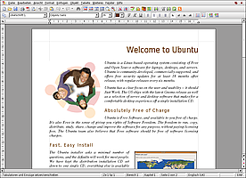
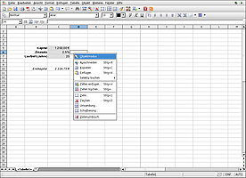
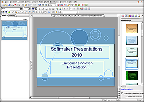

Softmaker Office
Dieser Artikel wurde für die folgenden Ubuntu-Versionen getestet:
Ubuntu 14.04 Trusty Tahr
Zum Verständnis dieses Artikels sind folgende Seiten hilfreich:
SoftMaker Office  ist eine kommerzielle Office-Software und besteht unter Linux aus den drei Applikationen TextMaker als Textverarbeitung, PlanMaker als Tabellenkalkulation und Presentations als Präsentationsprogramm. Laut Hersteller ist SoftMaker Office in der Lage, Word- und Excel-Dateien nahtlos zu lesen und zu schreiben. Man kann daher als Dateiformat das Microsoft Office Format (als Standard) setzen und die Dateien immer in diesem Format speichern. Aber auch das OpenDocument-Format von OpenOffice.org wird unterstützt.
ist eine kommerzielle Office-Software und besteht unter Linux aus den drei Applikationen TextMaker als Textverarbeitung, PlanMaker als Tabellenkalkulation und Presentations als Präsentationsprogramm. Laut Hersteller ist SoftMaker Office in der Lage, Word- und Excel-Dateien nahtlos zu lesen und zu schreiben. Man kann daher als Dateiformat das Microsoft Office Format (als Standard) setzen und die Dateien immer in diesem Format speichern. Aber auch das OpenDocument-Format von OpenOffice.org wird unterstützt.
Die Software ist kompatibel zu den gängigen Dateiformaten und gestattet es, außer den eigenen Formaten .tmd/.tmv (TextMaker), .pmd/.pmv (Planmaker) und .prd/.prv (Presentations) auch folgende Dateiformate zu verarbeiten bzw. zu speichern:
Word-Dokumente (.doc)
Excel-Dokumente (.xls); Hinweis: Word/Excel 2007 (.docx/.xlsx) nur in SoftMaker Office 2010 für Windows
OpenDocument-Text (.odt/.ott), wie sie von LibreOffice, OpenOffice.org und Calligra (früher KOffice) erzeugt werden
OpenOffice 1.x (.sxw)
RichText (.rtf)
PocketWord (.psw/.pwd)
HTML
Textdateien (.txt)
Eine PDF-Exportfunktion ist ebenfalls vorhanden. Das Programm lässt sich auf einen USB-Stick kopieren und so an anderen Linuxsystemen verwenden. Wie OpenOffice.org ist auch Softmaker Office für jedes gängige Betriebssystem zu haben (außer Mac OS X), so dass man dadurch plattformunabhängig arbeiten kann. Des Weiteren bringen aktuelle Versionen zusätzlich zwei integrierte Duden-Wörterbücher "Deutsches Universalwörterbuch" und "Großes Fremdwörterbuch" mit; im Gegensatz zu OpenOffice.org aber keinen eigenen Formel-Editor.
SoftMaker Office ist nur als 32-Bit-Programm verfügbar! Es gibt aber Pakete für 64-Bit, die auf der Nutzung der lib32-*-Pakete basieren.
Installation¶
Die Installation des Programms gestaltet sich einfach. SoftMaker bietet Debian-Pakete an, welche man nach dem Kauf herunterladen kann bzw. auf der CD-ROM vorfindet und auf gewohntem Wege installieren [5] kann. Alternativ kann man auch das .tgz-Archiv nutzen.
Die Programmteile können nun über die Einträge im Menü von GNOME, KDE oder Xfce einzeln gestartet werden oder über ein Terminal mit den Befehlen textmaker, planmaker und presentations gestartet [3] werden; die einzelnen Komponenten sind im Gegensatz zu OpenOffice.org einzelne Programme und müssen deshalb auch einzeln gestartet werden. In den Programmen existieren aber in der Symbolleiste Icons zum Starten der anderen Programme.
|  |
| TextMaker |
|  |
| PlanMaker © SoftMaker |
|  |
| Presentations |
Benutzung¶
Die Bedienung der Software erfolgt sehr intuitiv, so wie man es von einer normalen Textverarbeitung bzw. einer Tabellenkalkulation gewöhnt ist. Positiv fallen die hohe Geschwindigkeit und der niedrige Ressourcenverbrauch auf. Ein Nachteil ist im Moment ein fehlender Formeleditor unter Linux. Dieser soll aber irgendwann einmal eingebaut werden. Textmaker 2010 bietet ähnlich wie Micrososft Word einen Vollbildmodus, in welchem man zwei Seiten nebeneinander sieht und diese barbeiten kann.
SoftMaker FreeOffice¶
Neben der kostenpflichtigen Version gibt es auch eine kostenlose namens SoftMaker FreeOffice. Gegenüber der kostenpflichtigen Version fehlen hier u.a. die Rechtschreibprüfung, das Synonymwörterbuch, der technische Support sowie die Exportfunktion für die Microsoft-Formate DOCX, XLSX und PPTX, die aber allesamt gelesen werden können.
Um den Download zu starten, muss eine E-Mailadresse angegeben werden, an die der Freischaltcode geschickt wird. Etwa einmal die Woche erhält man dann auch eine E-Mail mit Produktinformationen von SoftMaker.
Hinweis:
Ab der Version 2016 verlangt Softmaker nun auch eine Aktivierung über Internet, was bei Softmaker bis dahin - zumindest für die Linux-Version - nicht der Fall war.
- Erstellt mit Inyoka
-
 2004 – 2017 ubuntuusers.de • Einige Rechte vorbehalten
2004 – 2017 ubuntuusers.de • Einige Rechte vorbehalten
Lizenz • Kontakt • Datenschutz • Impressum • Serverstatus -
Serverhousing gespendet von